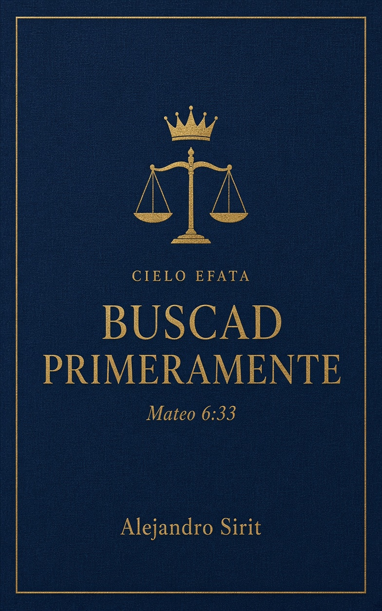
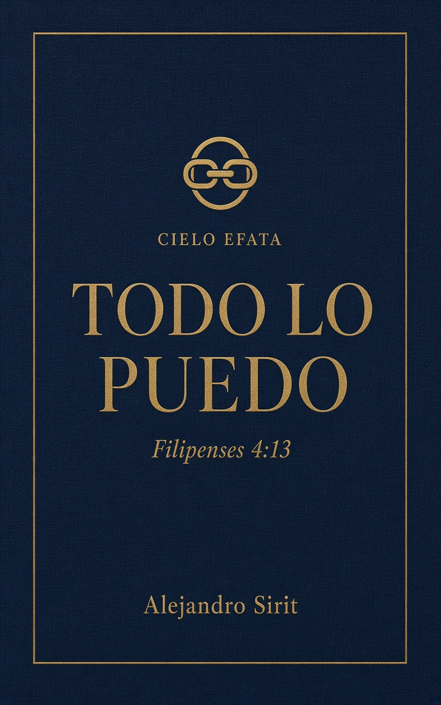
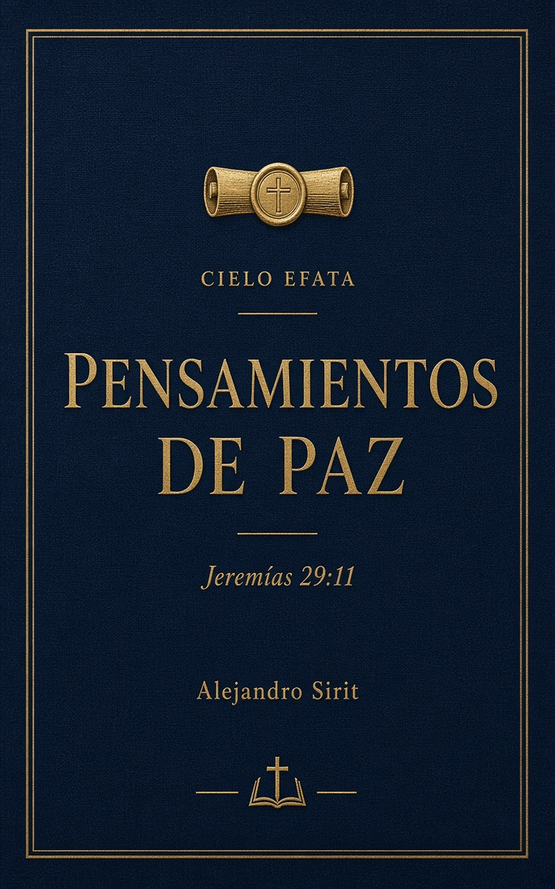
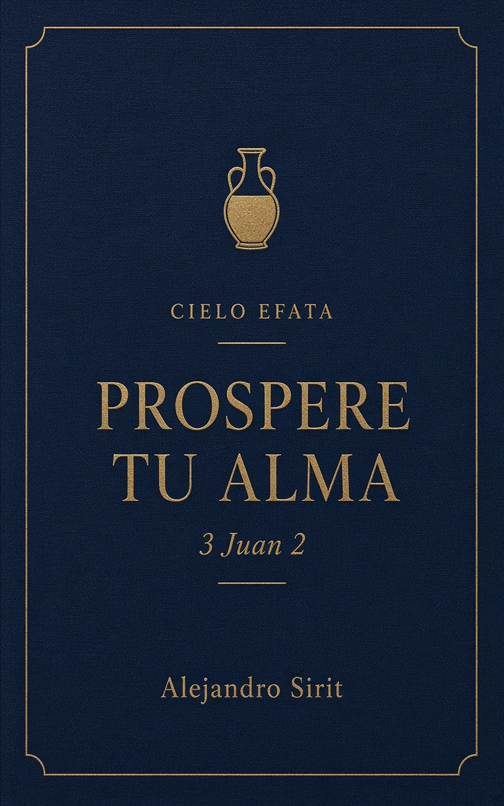
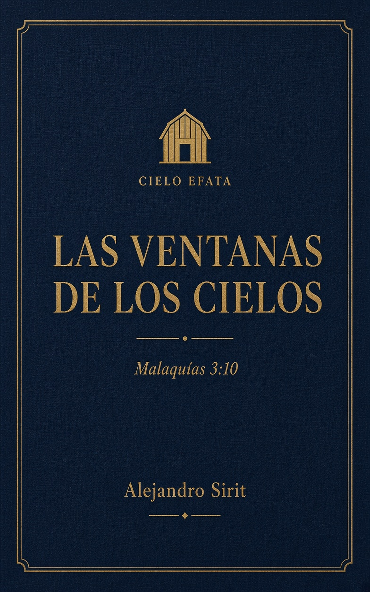
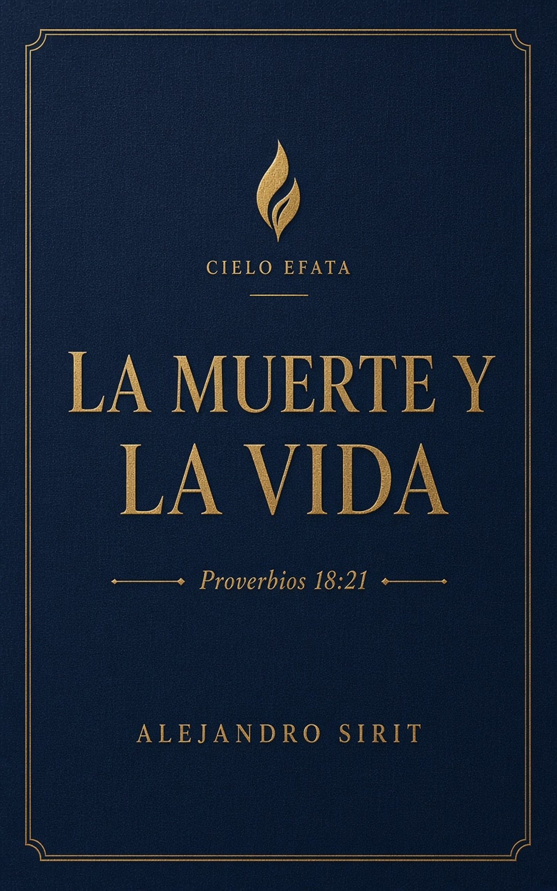

Ensayos cortos · un número al mes
Tratados
Si es la primera vez: un tratado, aquí, es un ensayo corto sobre un versículo que se cita a menudo sin abrir el capítulo. Cada uno compara versiones, sigue las palabras, cruza el resto de la Escritura y cierra con una conclusión del Dr. Alejandro Sirit. Se abre en esta casa, como un libro, con el pase de la hoja. El capítulo, al lado, en RevelatiO.

01 · abril 2026 · Mateo 6:33Buscad primeramenteNo es técnica de despensa. El Señor lo dijo en el monte, después de dos señores, delante de quien conocía la tinaja vacía.

02 · mayo 2026 · Filipenses 4:13Todo lo puedoEl «todo» lo fija el versículo 12: hambre y abundancia. No el podio.

03 · junio 2026 · Jeremías 29:11Pensamientos de pazCarta a desterrados. Setenta años. El «vosotros» no es un diploma de graduación.

04 · julio 2026 · 3 Juan 2Prospere tu almaUn saludo a Gayo, no una póliza. El alma es la medida, no el premio del caudal.

05 · agosto 2026 · Malaquías 3:10Las ventanas de los cielosResponde a un robo. Las compuertas son lluvia de alianza, no sucursal.

06 · septiembre 2026 · Proverbios 18:21La muerte y la vidaLa lengua cosecha. No crea mundos. El mashal no entrega el fiat.
07 · en prensa · Marcos 11:23–24
El monte que se mueve
La higuera seca no autoriza a decretar bienes. Se escribe este mes.
08 · próximo · Romanos 8:28
Todas las cosas les ayudan a bien
El bien es la conformidad con el Hijo, no el desenlace cómodo.
Seis títulos ya están escritos. Se sube uno al mes. El PDF de lujo —portada, cuerpo en prosa, sello y contraportada— se lee aquí. El capítulo no se cobra.